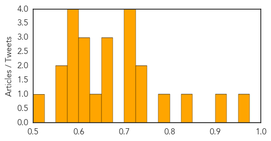
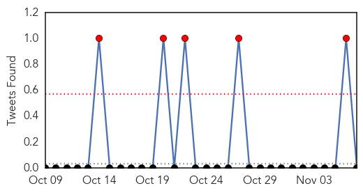
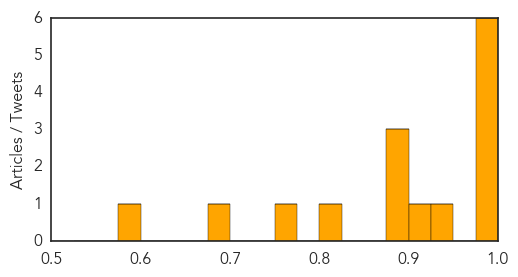

Unknown
30-Day Web Trend
0 alerts, 0 warnings

30-Day Twitter Trend
1 alerts, 0 warnings

Article Locations


Article Confidences
Top Articles:
- 0.955
- Oregon school pumpkin carving party suspected in norovirus outbreak — Health — Bangor Daily News — BDN Maine
- 0.906
- Last year's enterovirus D68 outbreak more widespread than first thought
- 0.842
- How An ASHA Worker Is Spreading Awareness
- 0.797
- Victims of severe side effects call for removal of HPV vaccine
- 0.730
- Emails from Paris Kosher store gunman to ‘handler’ revealed
- 0.727
- Why I wear a remembrance poppy: The story of Private John O’Leary
- 0.707
- Leaders of Taiwan and China hold historic talks
- 0.707
- Russia to send fleet of planes to Egypt to bring home tourists
- 0.702
- Kremlin slams Charlie Hebdo cartoons on Russian air crash
- 0.702
- Burma prepares for first free elections in 25 years
- 0.664
- Malaria Outbreak Hits Karoi
- 0.660
- Longreads: 5 Diseases You Didn't Know to Worry About
- 0.654
- A game-changer for LGBT health
- 0.640
- More than 700 get surgery in health camp
- 0.614
- Pet cat from Chimacum area found to have rabies; discovery marks first time in state since 2002 -- Port Angeles Port Townsend Sequim Forks Jefferson County Clallam County Olympic Peninsula Daily news
- 0.610
- 14 lose eyesight after botched cataract surgery in Maharashtra
- 0.603
- Update: Montague Center boil order lifted
- 0.581
- Thirteen injured in Colectiv fire die during the weekend, DNA makes arrests
- 0.581
- Thirteen injured in Colectiv fire die during the weekend, DNA makes arrests
- 0.581
- Thirteen injured in Colectiv fire die during the weekend, DNA makes arrests
- 0.579
- A FAILING HEALTH CARE SYSTEM
- 0.575
- GreyHeart launches home based Medicare
- 0.555
- Stop the violence. Protect health care
- 0.507
- Health Audit report does not support Shaw's claim of infection at Cornwall in July
Top Tweets:
-
No tweets found for Nov 07, 2015
Influenza
30-Day Web Trend
30-Day Twitter Trend
5 alerts, 0 warnings

Article Locations
Article Confidences
Top Articles:
- 0.999
- First Infant Death From Flu Confirmed : Eastern Group Publications
- 0.998
- Spike In Flu Cases Prompts Australia To Add Another Strain To Vaccine For 2016 Season
- 0.996
- Eastern Health Encouraging Public to Get Flu Vaccines
- 0.995
- Get Your Flu Vaccine to Prevent Influenza Widespread
- 0.991
- Aussies to be injected with Phuket virus
- 0.979
- Influenza Season: 4 Reasons To Say ‘Screw You Flu Shots’
- 0.945
- Stanislaus County infant dies of flu; state officials urge vaccination
- 0.911
- Ban on poultry partially lifted in Greater Accra
- 0.889
- What Flu Season Can Teach Us About Fighting Cyberattacks
- 0.885
- Today's stories from newspapers in North Bay Nipissing
- 0.877
- Rhinovirus Making The Rounds
- 0.800
- Today's stories from newspapers in Ottawa
- 0.751
- November 6, 2015 Archives
- 0.682
- 'Using this hospital could be dangerous to your health'
- 0.584
- Today's stories from newspapers in Halton Hills
Top Tweets:
-
No tweets found for Nov 07, 2015